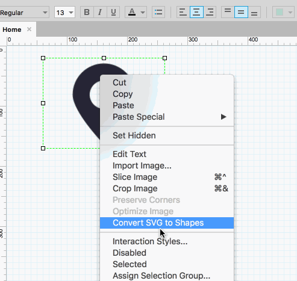

Axure RP 8.0.0.3330新增支持SVG转换成形状。
SVG格式是一种可缩放矢量图形。将SVG图片拖入Axure，然后在SVG图形上点击鼠标右键，选择【转换SVG图片为形状】将其转换为形状类型。转换成形状后，就可以修改他的颜色了，还可以任意调整图形的形状。
如上图，选择截图中间一条很窄的水平切片为“中心”部分，指定其余的几乎整个图像作为“边缘”。这意味着当把图片拉长时，图片的大部分区域都会保持不变，但选择的中心部分会被妥妥地拉伸。即选中的部分承载了所有的拉伸，其他区域则保持不变。
COPY字体图标后，粘贴到文本元件中，字体图标就会和文字变成一个元件，这样无论是做悬停还是选中等效果都非常方便。比将字体图标元件和文本元件通过组合的方式合并在一起方便多了。
对齐的时候会以第一个选中的按钮为基准